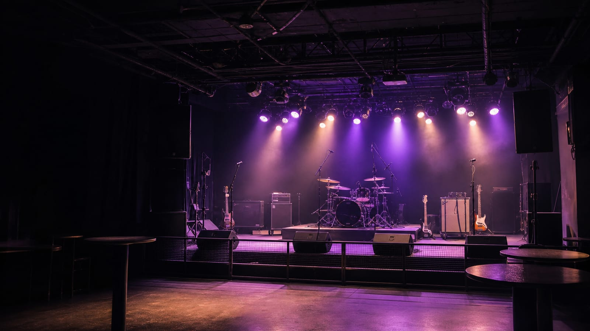
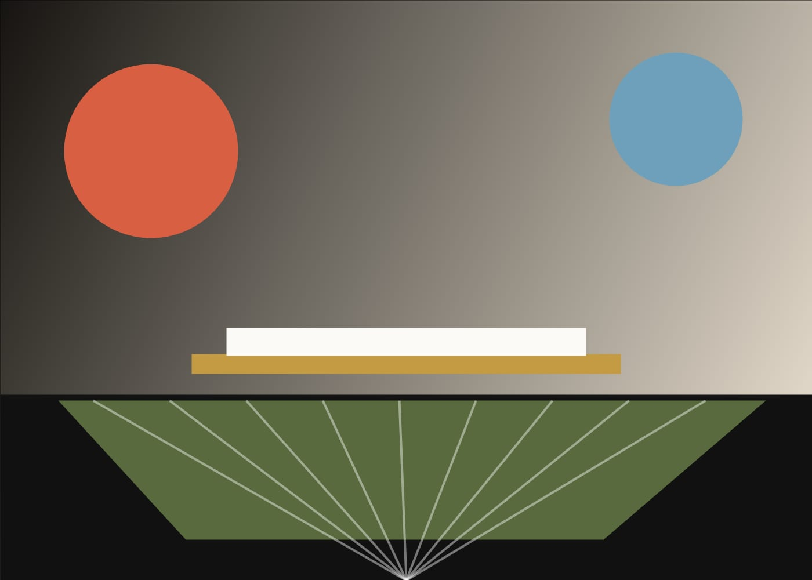
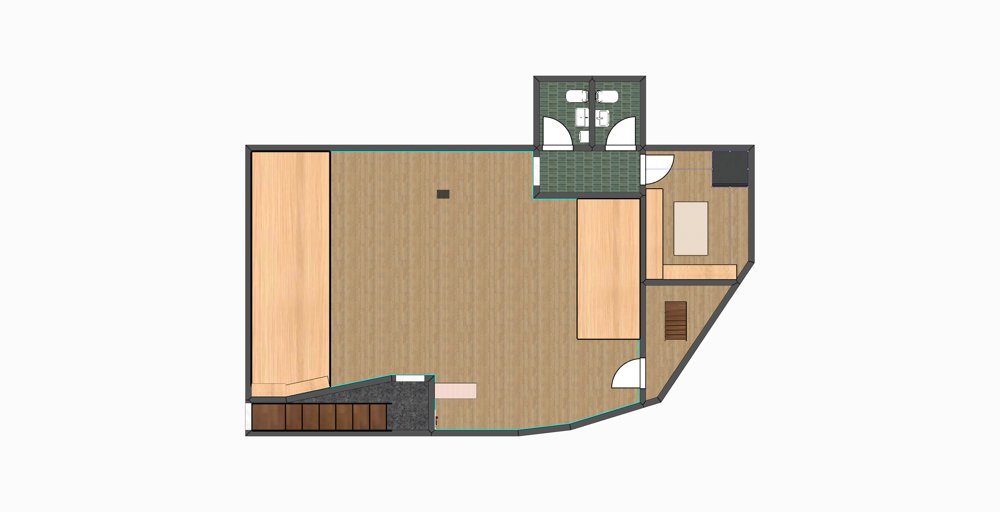

STAGE FRONTPAGE · 02 / VENUE
공연장
소개
대관 판단에 필요한 무대 스펙, 장비 구성, 운영 포맷을 한 페이지에 정리했습니다. 선명한 라이브 사운드, 무대와 가까운 객석, 효율적인 동선이 Backline Stage의 핵심입니다.
Philosophy
가까운 거리, 큰 소리, 빠른 결정
Backline Stage는 대형 컨벤션홀이 아닙니다. 밴드의 라이브 질감이 살아 있는 작은 무대로, 공연·쇼케이스·라이브 촬영처럼 밀도 있는 행사에 최적화되어 있습니다.
— 01
밴드를
위한 무대
Backline Stage는 밴드 라이브의 질감과 현장감을 가까이 담아내는 작은 무대입니다. 공연, 쇼케이스, 라이브 촬영처럼 밀도 있는 행사에 최적화된 무대형 스튜디오입니다.
이 공간으로 문의 → LIVE MOOD
LIVE MOOD

BACKLINESize · Spec
공연장 사이즈
대관 시 자주 받는 사이즈와 운영 조건을 한 번에 정리했습니다.
— 02
| 무대 사이즈 | 가로 6.6m × 세로 4.3m (무대 높이 0.6m) |
|---|---|
| 수용 인원 | 스탠딩 최대 150명 / 간이 좌석 설치 시 최대 90석 |
| 천장 높이 | 3.8m (조명 트러스 기준) |
| 층 / 위치 | 지하 1층 |
| 대기실 | 아티스트 라운지 1실, 화장대, 미러, 테이블, 냉장고 구비 |
| 운영 시간 | 11:00 – 24:00 (리허설 / 본 공연 / 정리) |
| 관객 동선 | 입장 매표 → 클로크룸 → 객석 / 백스테이지 분리 |
Gear · Backline
장비 리스트
PA · 음향
FOH / Monitor
- Behringer X32 Full Size · S16 Stage I/O × 2
- d&b E12 Main × 2 · Vi-GSUB × 2
- dB Technologies LVX P8 Front Fill × 3
- dB Technologies LVX P12 Monitor × 2
Monitor · DI
IEM / Direct box
- Sennheiser EW IEM G4 TWIN 1 SET ★
- Behringer P2 유선 인이어 × 6
- Shure SE215 유선 인이어 × 8 ★
- RADIAL JDI Stereo × 2 · PRO D2 × 1 · J48 × 1
Mic · 음향
Microphone
- AKG Drum Set Session I · Sennheiser e902
- sE Electronics sE7 MP
- Shure SM57 × 3 · Shure Beta58A × 3
- Sennheiser EW-D 835 무선 마이크 × 2 ★
Backline · 악기
Drum / Amp / Keys
- Gretsch RN-2 Drum · Zildjian K Sweet Cymbal Set
- Ashdown ABM-600 EVO IV · ABM-410H EVO-20
- Marshall JVM-410H · JCM900 4100 · 1960A Cabinet × 2
- Yamaha CP88 · Yamaha MODX M7 ★ · Boss FV-500L ★
Light · 조명
Console / Fixture
- MA Lighting Grand MA2 ONPC Command Wing
- Favorite LED Vader 250 Moving Spot
- BEAM 230 × 4 · Favorite LED 740B × 8
- LED COB WHITE 200 × 4 · Aegis Pro FZ-2.5C × 2
Option · 협의
Additional operation
- 무선 인이어 35,000원 / 1CH
- 무선 마이크 50,000원 / 1EA
- 유선 인이어 20,000원 / 1EA
- 키보드·볼륨 페달 등 추가 장비 사전 협의
Gear · Operation
장비 · 운영 안내
— 04
기본 장비
| 구분 | 기본 제공 내용 |
|---|---|
| 마이크 | Shure Beta58A 유선 3개 / Shure SM57 3개 / sE Electronics sE7 1개 |
| 모니터 | 웨지 모니터 2대 / Behringer P2 유선 IEM 6대(파트별 고정 배정) |
| 건반 | Kurzweil SP7 Grand 1대 |
| DI · 스탠드 | Radial JDI Stereo 2대 / J48 1대 / ProD2 1대 / 노트북 스탠드 1대 |
유료 장비 · 운영 옵션
| 옵션 | 비용 | 기준 · 비고 |
|---|---|---|
| Sennheiser EW-D 835 무선 마이크 | 1CH 30,000원 / 2CH 50,000원 | 최대 2CH |
| Sennheiser EW IEM G4 무선 IEM | 35,000원 / CH | 최대 2CH |
| Shure SE215 이어폰 | 20,000원 / 개 | 최대 8개 |
| 메인 건반용 볼륨 페달 | 20,000원 | SP7 Grand 추가 |
| Yamaha MODX 7+ | 100,000원 | 1대, 볼륨 페달 포함 |
| 공연장 플레이백 운영 | Mono · Stereo 50,000원 | Multi는 별도 협의 |
| 제휴 업체 장비 렌탈 | 별도 견적 | 기본 보유 수량 초과 또는 특정 모델 요청 시 가능 |
영상 · 음원 소스 및 세부 오퍼레이팅
| 옵션 | 비용 | 제공 · 적용 기준 |
|---|---|---|
| 영상 녹화본 + 2트랙 음원 | 20곡 이하 100,000원 / 21곡 이상 150,000원 | 선택 카메라 영상 소스 + 공연 실황 Stereo 2트랙 |
| 멀티트랙 원본 제공 | 100,000원 | 개별 트랙 원본 + 2트랙 음원 포함 |
| 음향 세부 오퍼레이팅 | 300,000원 | 25곡 이내 · 본공연 3시간 이내 |
| 조명 세부 오퍼레이팅 | 300,000원 | 25곡 이내 · 본공연 3시간 이내 |
| 기준 초과 세부 오퍼레이팅 | 별도 협의 | 25곡 또는 본공연 3시간 초과 |
Floor plan
공연장 실제 도면
무대, 객석, 대기 공간, 화장실, 출입 동선을 실제 도면 기준으로 한눈에 확인하세요.
FLOOR PLAN · ACTUAL LAYOUT

Talk to us
이 공간이 맞다면?
스펙이 행사에 맞는다면 가능 일정과 함께 바로 문의해 주세요.
— 05
Next step
스펙이 맞으면 다음은 일정
희망 날짜와 행사 유형만 정리되어 있어도 회신이 빠릅니다. 캘린더 먼저 확인해 보세요.